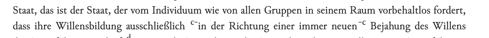

Anmerkungen (Fussnoten)¶
Anmerkungen/Fussnoten werden mit <note> in den Text eingefügt.
Innerhalb der Anmerkungen wird grundsätzlich zurückhaltender getaggt als im Haupttext. Namen, Orte und Datumsangaben werden nur getaggt, wenn sie im Sinnhorizont des Haupttextes stehen — wenn also der Schreibende an das, was in der Anmerkung steht, gedacht haben kann.
Es werden folgende Typen unterschieden:
- Sachanmerkungen der Herausgeber:
<note>(arabische Ziffern) - Textkritische Anmerkungen:
<note type="textcritical"> - Originalfussnoten:
<note type="original"> - Anmerkungen der digitalen Ausgabe:
<note type="digital">
Wenn @n angegeben wird, wird der Wert für die Kennzeichnung der Fußnote
im Haupttext sowie in der Fußnotenzählung verwendet. Dies ist insbesondere
für "*"-Fussnoten von Bedeutung.
Jede Fußnote erhält eine @xml:id, damit sie verlinkt werden kann.
Sachanmerkungen¶
Die xml:id hat ein führendes "n" und eine mindestens zweistellige Ziffer
<note xml:id="n01">...</note>
Textkritische Anmerkungen¶
Verweis auf Vorlagen¶
In den textkritischen Anmerkungen wird häufig auf Vorlagen verwiesen:
<note n="g" type="textcritical" xml:id="ng">
<ref corresp="B">Mskr.</ref>: „Nachschreiben in menschlicher Sprache“
(die nicht in das <ref corresp="A">Tskr.</ref> übernommenen Worte sind im
<ref corresp="B">Mskr.</ref>...
Die Vorlagen sind im <teiHeader> unter sourceDesc aufgelistet und
enthalten eine @xml:id (z.B. "A", "B"). Im TEI-Text wird mit
<ref corresp="B">Mskr.</ref> auf die entsprechende Vorlage verwiesen:
<!-- teiHeader -->
<sourceDesc>
<bibl xml:id="A" type="source">A (Vorlage der Edition): …</bibl>
<bibl xml:id="B" type="source">B (Weitere Vorlage): …</bibl>
</sourceDesc>
<!-- textkritische Fussnote -->
<note type="textcritical" xml:id="ng">
<ref corresp="B">Mskr.</ref>: „Nachschreiben in menschlicher Sprache"
(die nicht in das <ref corresp="A">Tskr.</ref> übernommenen Worte …)
</note>
Datenbank oder kb_latest_version für xml:id
Der <teiHeader> wird aus der Datenbank erzeugt. Für die Feststellung
der korrekten @xml:id ist die Datenbank oder kb_latest_version zu
konsultieren (in kb_xml_src ist die @xml:id manchmal noch nicht
eingetragen).
Textkritische Fußnoten mit von-bis Kennzeichnung¶
Hier wird der Anfang des in der Fußnote kommentierten Bereichs mit <anchor type="note" xml-id="..." /> und das Ende mit <note target="..."> gekennzeichnet. Der Text der Fußnote steht immer innerhalb der <note>. Die Nummer der Fußnote wird aus dem Wert in @n genommen. Die @xml:id für <anchor> und der Eintrag in target müssen identisch sein.

dass ihre Willensbildung ausschließlich
<anchor type="note" xml:id="fn-c"/>in der Richtung einer immer
neuen<note n="c" target="fn-c" type="textcritical" xml:id="nc">
Korrigiert aus: „zu immer neuer“.</note>
Textkritik in Sachanmerkungen¶
Bei manchen Texten gibt es so wenig Textkritik, dass diese in den Sachanmerkungen untergebracht wurden (um keinen zweiten Apparat im Druck zu benötigen):
<!-- Sachanmerkung note ohne @type-->
<note xml:id="n01">Im <ref corresp="A">Mskr.</ref> Mittelteil durch Lochung
unleserlich.</note>
Originalfussnoten¶
Originalfussnoten sind Fussnoten der Druckvorlage. Sie werden mit
<note type="original"> ausgezeichnet.
In @n steht das Fussnotenzeichen so, wie es im Text erscheinen soll —
also *, *7, *7) oder was der Druck sonst vorgibt.
Die @xml:id muss mit einem Buchstaben beginnen und darf nur Buchstaben
und Ziffern enthalten — kein *, kein Unterstrich, kein Bindestrich. Sie
wird gebraucht, um die Originalfussnote anspringen zu können.
Sternchen-Fussnoten¶
Da das * nicht in die @xml:id übernommen werden kann, wird es durch das
Präfix s ersetzt, gefolgt von der laufenden Nummer der Sternchen-Fussnote
im Text.
Beispiel: Die 7. Sternchen-Fussnote in einem Text:
Der Querverweis auf eine Fussnote stellt der @xml:id das Präfix fn_
voran:
Zum Aufbau von @target mit Seiten- und Bandangabe siehe
Querverweise.
Digitale Anmerkungen¶
Digitale Anmerkungen kommen nur in der digitalen Edition vor. Sie sind äusserst sparsam einzusetzen und dienen drei Zwecken:
- Sachlicher Irrtum, bei dem der Originaltext sichtbar bleiben soll. Beispiel: Der Autor schreibt "Gregor VI.", meint aber Gregor VII. — das ist kein blosser Druckfehler, sondern ein Irrtum, der im Original erkennbar bleiben und in einer Fussnote kommentiert werden soll.
- Nachträglicher Querverweis auf eine Stelle der Gesamtausgabe, der
bei der Drucklegung noch nicht existierte (
<ref type="pub-">). - Verlinkung in den KBA-Bestand, wenn im Drucktext kein passender
Anker steht oder mehrere Bezugsobjekte zusammengefasst werden müssen
(
<ref type="kba-objects-id">, bzw.<ref type="pub">für bereits in der KBGA publizierte Texte).
Welcher Mechanismus wofür?¶
| Zweck | Auszeichnung |
|---|---|
| Druckfehler korrigieren (Original sichtbar) | <choice>/<sic>/<corr> |
| Sachlicher Irrtum, nachträglicher Verweis, mehrere Refs an einem Anker, KBA-Verlinkung | <note type="digital"> |
Wortvervollständigungen aus dem Print (Neutralitaet[en]) |
<choice>/<sic>/<corr> |
Reine Druckfehler (Buchstabendreher, falsche Schreibung) werden also
nicht mit digitalen Anmerkungen kommentiert, sondern stillschweigend
mit <choice>/<sic>/<corr> korrigiert.
Auszeichnung¶
Digitale Anmerkungen erhalten @type="digital", @resp mit dem Kürzel der
verantwortlichen Person und @n für die korrekte Einordnung in den
Fussnotenapparat. Die @xml:id wird mit einem griechischen Buchstaben
gebildet, damit sie sich von den arabischen Ziffern (Sachanmerkungen) und
lateinischen Buchstaben (textkritische Anmerkungen) unterscheidet:
<note resp="ak" type="digital" xml:id="nα" n="α">Richtig:
<persName ref="kbga-actors-4707">Gregor VII.</persName>
(um <date from="1025" to="1085">1025–1085</date>)</note>
Digitale Anmerkungen können auch innerhalb einer bestehenden Fussnote stehen
(verschachtelte <note>):
<note xml:id="n02">Herkunft nicht nachweisbar.
<note type="digital" resp="ak" xml:id="nα">
<ref type="pub-" target="../volume/48/p586#fn_n94">1914-1921,
S. 586f., Anm. 94</ref>
</note>
</note>
Mehrere Verweise an einem Anker¶
Hängen an einer Textstelle mehrere Bezugsobjekte (mehrere Briefe, mehrere Predigten), wird eine digitale Fussnote mit einer Liste der Refs gesetzt — nicht mehrere Inline-Links. Das hält die Lesefassung ruhig und trennt sichtbar Drucktext und digitale Ergänzung.
…schicke dir hier unerbetenerweise die drei Predigten<note
resp="sm" type="digital" xml:id="nα" n="α">
<ref type="pub" target="27036">1. Predigt</ref>: 2. Mose 17,8–15 (I)
vom 29.8.1915;
<ref type="pub" target="27037">2. Predigt</ref>: 2. Mose 17,8–15 (II)
vom 5.9.1915;
<ref type="pub" target="27038">3. Predigt</ref>: 2. Mose 17,8–15 (III)
vom 12.9.1915
</note> über <persName ref="kbga-actors-2228">Mose</persName>.
Für noch nicht in der KBGA publizierte Briefe wird statt <ref type="pub">
der Verweis ins Archiv mit <ref type="kba-objects-id" target="…"> gesetzt;
als Linktext eignet sich die KBA-Signatur oder eine kurze Sigle ("Brief",
"Taschenkalender").
Fussnoten für mehrere Textstellen (<ptr>)¶
Bezieht sich dieselbe Fussnote auf mehrere Textstellen, wird an der zweiten
Stelle ein <ptr> gesetzt, das auf die @xml:id der bestehenden Fussnote
verweist. Das Fussnotenzeichen wird dort erneut angezeigt und verlinkt auf
dieselbe Fussnote:
<note xml:id="n01"> Der angezeigte Text </note>
<!-- … an anderer Stelle im selben Text: -->
<ptr n="1" type="note" target="n01"/>
Biogramme (<seg type="bio">, <seg type="org">)¶
Biogramme zu Personen und Organisationen stehen in Sachanmerkungen und
werden mit <seg> markiert. Innerhalb des <seg> muss mindestens die
Person bzw. Organisation mit <persName> / <orgName> und @ref
ausgezeichnet sein. Weitere Auszeichnungen innerhalb des Biogramms sind
nicht nötig (Pop-ups werden im Biogramm-Bereich unterdrückt).
<seg type="bio">
<persName ref="kbga-actors-296">Friedrich Niebergall</persName>
(20.3.1866-20.9.1932), 1892 Pfarrer in Kirn, seit 1903 akademische
Lehrtätigkeit als praktischer Theologe in Heidelberg, seit 1922 als
Ordinarius in Marburg.
</seg>
Für Organisationen wird <seg type="org"> verwendet:
<seg type="org">Die Zeitschrift
«<orgName ref="kbga-actors-6169">Zwischen den Zeiten</orgName>»
wurde 1912 gemeinsam von
<persName ref="kbga-actors-2151">Karl Barth</persName>,
<persName ref="kbga-actors-137">Friedrich Gogarten</persName>,
<persName ref="kbga-actors-403">Eduard Thurneysen</persName> und
<persName ref="kbga-actors-275">Georg Merz</persName> begründet.
</seg>
Zu <persName> und <orgName> allgemein siehe
Textelemente → Akteure.
Abweichungen von Standard-Kennzeichnungen¶
Doppelt verwendete Fussnotenzeichen¶
Es kommt vor, dass im Buch innerhalb eines Textes identische Fußnoten
doppelt verwendet werden. Eine @xml:id muss innerhalb einer Datei
eindeutig sein. Doppelte Fussnotenzeichen werden wie folgt aufgelöst:
- eine doppelte Sachfußnote
xml:id="n01"ersetzen durch:
<note xml:id="n01a"> und <note xml:id="n01b">
- eine doppelte textkritische Fußnote
xml:id="na"ersetzen durch:
xml:id="na1" und xml:id="na2"
Sie erscheinen im Browser entsprechend der Änderung dann mit "1a" und "1b" bzw. "a1" bzw. "a2".